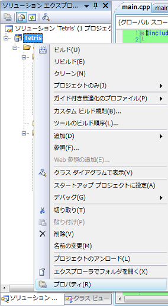
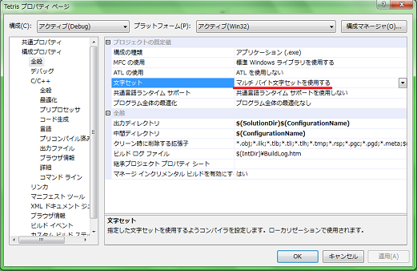
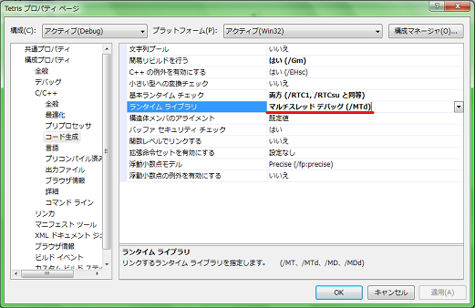

まずは真っ暗な何もしない画面を表示するプログラムを創りましょう。
なお、ここからは他力本願でいきます。
画面はDXライブラリで創ります。
DXライブラリについては、
「ＤＸライブラリ置き場」
を参照に設定してください。
DXライブラリを使用するときに、忘れがちなのはプロジェクトの設定です。
プロジェクト側にもDXライブラリに合わせた設定が必要です。
ソリューションのプロパティを開きます。

そして変更箇所は4カ所です。
Debug:全般->文字セットを「マルチバイト文字」に
Debug:C/C++->コード生成->ランタイムライブラリを「マルチスレッドデバッグ」に
Resource:全般->文字セットを「マルチバイト文字」に
Resource:C/C++->コード生成->ランタイムライブラリを「マルチスレッド」に


※画像はDebugモード時の設定。
さて、ではコードを打ち込んでいきましょう。
「41. 毎回書くプログラムの骨格(キー入力監視付)」
こちらのコードをコピペして少し改変します。
まぁこの辺は流儀の問題なので、自分がわかるようにしてくれればどうでもいいです。
//main.cpp
#include "../include/main.h"
//キー入力を保持する変数
int Key[256];
//キー入力を取得する関数
int GetHitKeyStateAll_2(int GetHitKeyStateAll_InputKey[]){
char GetHitKeyStateAll_Key[256];
GetHitKeyStateAll( GetHitKeyStateAll_Key );
for(int i=0;i<256;i++){
if(GetHitKeyStateAll_Key[i]==1) GetHitKeyStateAll_InputKey[i]++;
else GetHitKeyStateAll_InputKey[i]=0;
}
return 0;
}
//ループ時の処理
bool ProcessLoop(){
//メッセージ処理
if(ProcessMessage()!=0) return false;
//画面をクリア
if(ClearDrawScreen()!=0) return false;
//入力状態を保存
if(GetHitKeyStateAll_2(Key)!=0) return false;
//ESCが押されていない
if(Key[KEY_INPUT_ESCAPE]!=0) return false;
return true;
}
//メイン関数
int WINAPI WinMain( HINSTANCE hInstance, HINSTANCE hPrevInstance,LPSTR lpCmdLine, int nCmdShow ){
ChangeWindowMode(TRUE);//ウィンドウモード
if(DxLib_Init()==-1 || SetDrawScreen( DX_SCREEN_BACK )!=0) return -1;//初期化と裏画面化
while(ProcessLoop()){
ScreenFlip();
}
DxLib_End();
return 0;
}
ループの条件式を一つの関数にまとめただけです。
後でこのProcessLoop関数に、毎フレーム実行する関数を追加していきます。
また、main.hでDxLib.hをインクルードします。
ついでに他のヘッダーもインクルードしておきます。
//main.h //DXライブラリ #include "DxLib.h" //define定義 #include "define.h" //クラス定義 #include "class.h" //グローバル変数 #include "GV.h" //typedef宣言 #include "typedef.h" //関数プロトタイプ宣言 #include "func.h"
ソースファイル(*.cpp)側ではこのmain.hをインクルードしておくようにしてましたので、
全てのヘッダーがインクルードされることになります。(構造的にどうかと思うけど・・・)
これでビルドして実行できればOKです。
実行結果::真っ暗なので略
Escキーを押すと終了するようになっていますね。
とりあえず今回はここまでですが、
後々キー入力処理を分離して書きます。
テトリスはそんなに動きが激しいゲームではないですが、
次はスムーズに処理が進行しているかを知るためのfpsを表示します。